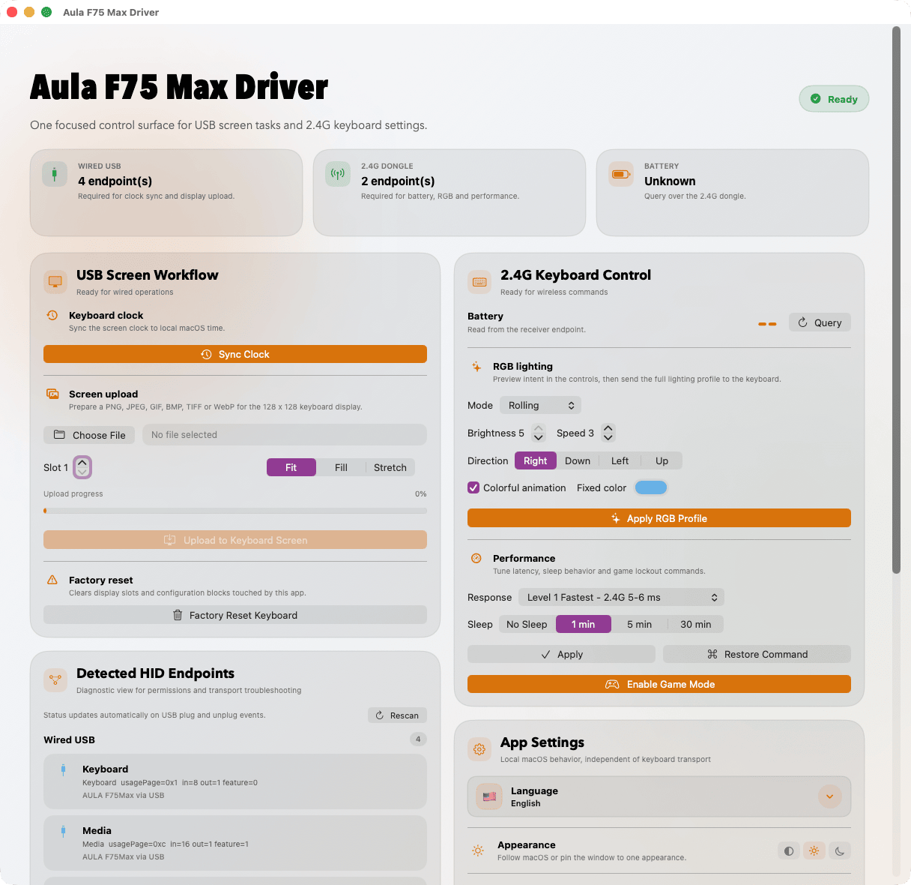
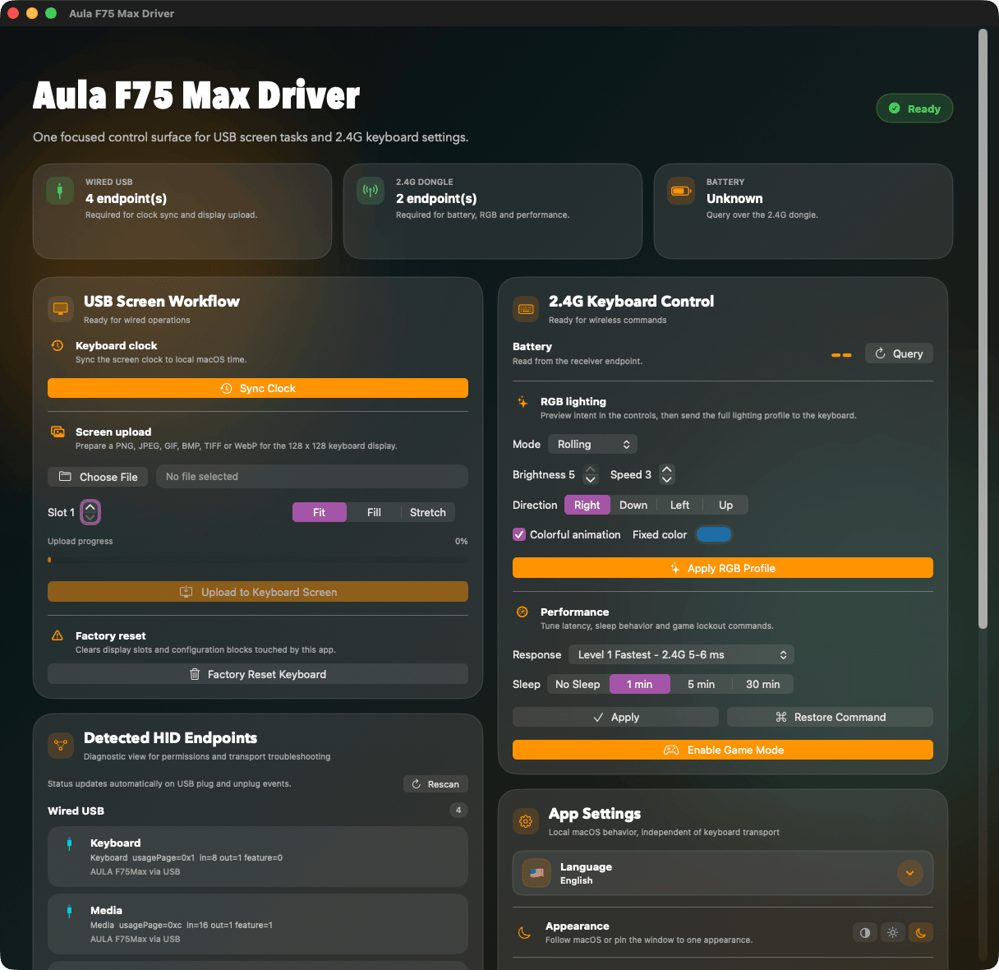

Upload images and GIFs to the keyboard display with fit, fill, and stretch modes.
Native macOS, Linux, and Android utility
Control Aula F75 Max on desktop or Android.
Configure the keyboard display, RGB lighting, battery status, response level, and Game Mode from one focused app across all three platforms.
macOS 14+
Linux GTK4
Android 9+ with USB OTG
USB-C + 2.4G
Aula F75 Max Driver

Battery
91%
Control battery, RGB lighting, response, sleep, and Game Mode through the receiver.
Direct communication through macOS HID APIs, Linux hidraw/hidapi, and Android USB Host.
What's inside
Tools built specifically for the F75 Max.
The app separates wired operations from 2.4G settings, so it is clear which connection mode each task needs on every platform.
Keyboard display
Upload PNG, JPEG, GIF, BMP, TIFF, and WebP files to the 128 x 128 display. Animated GIFs keep their frame delays.
RGB and performance
Configure lighting mode, brightness, speed, direction, fixed color, response level, and sleep timeout.
Battery and alerts
Read battery percentage through the 2.4G receiver. Desktop apps can also notify you when it drops below 20%.
HID diagnostics
The endpoints panel shows transport, usage pages, and report sizes for quick connection and permission checks.
Light and dark
The window follows the macOS appearance, and an Appearance control pins it to light or dark whatever the system is set to.


Workflow
Two connections, two areas of responsibility.
USB-C is used for display tasks and clock sync. The 2.4G receiver is used for battery, RGB, response, sleep, and Game Mode.
- Sync the keyboard clock to the local device time.
- Factory reset for display slots and configuration blocks used by this app.
- Launch at Login on macOS and interface language selection on every platform.
- Android includes English and Russian; desktop apps include seven localizations.

Install
Download a DMG, DEB, or Android APK.
Ready-made build
Open GitHub Releases for the macOS DMG, Debian/Ubuntu DEB, and APK in future Android releases.
Open releases/latestBuild from source
Desktop builds use Xcode tools or Swift 6 with GTK4 and hidapi. Android builds require JDK 17 and the Android SDK.
make all
open "build/Aula F75 Max Driver.app"
# Linux
make linux-deb
sudo apt install ./build/AulaF75MaxDriver-v*_*.deb
# Android
make android-build
adb install -r android/app/build/outputs/apk/debug/app-debug.apkPlatform permissions
On Android 9+, connect through USB OTG, tap Grant USB access, and approve the system prompt. macOS uses Input Monitoring; Linux uses a udev rule.
System Settings
Privacy & Security
Input Monitoring
Android 9+ / USB OTG
Grant USB accessOpen source